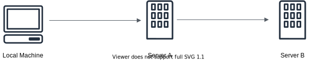
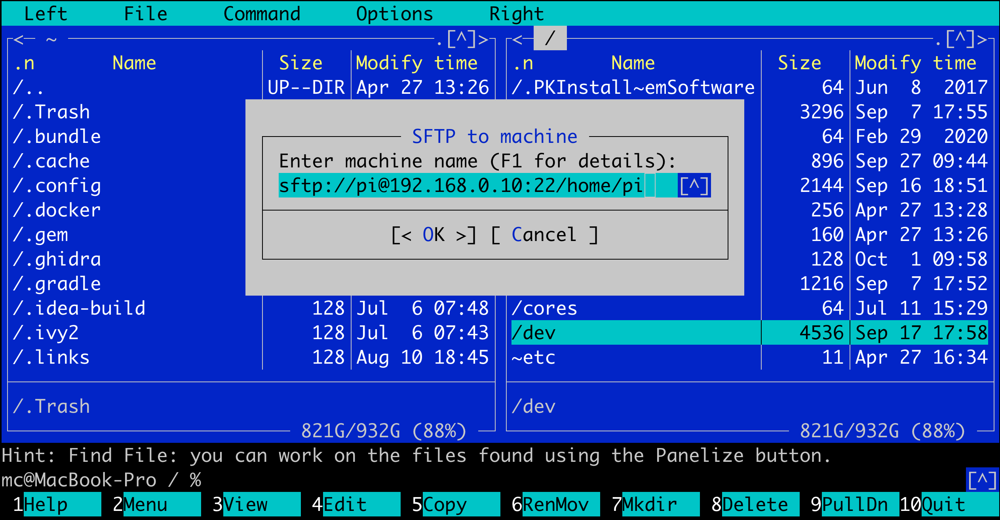
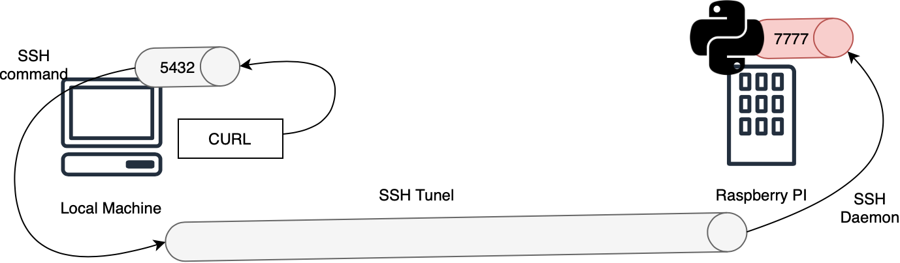
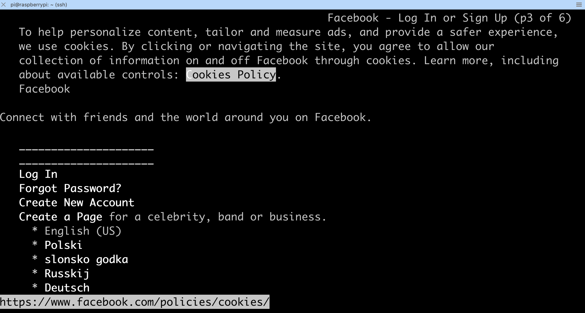
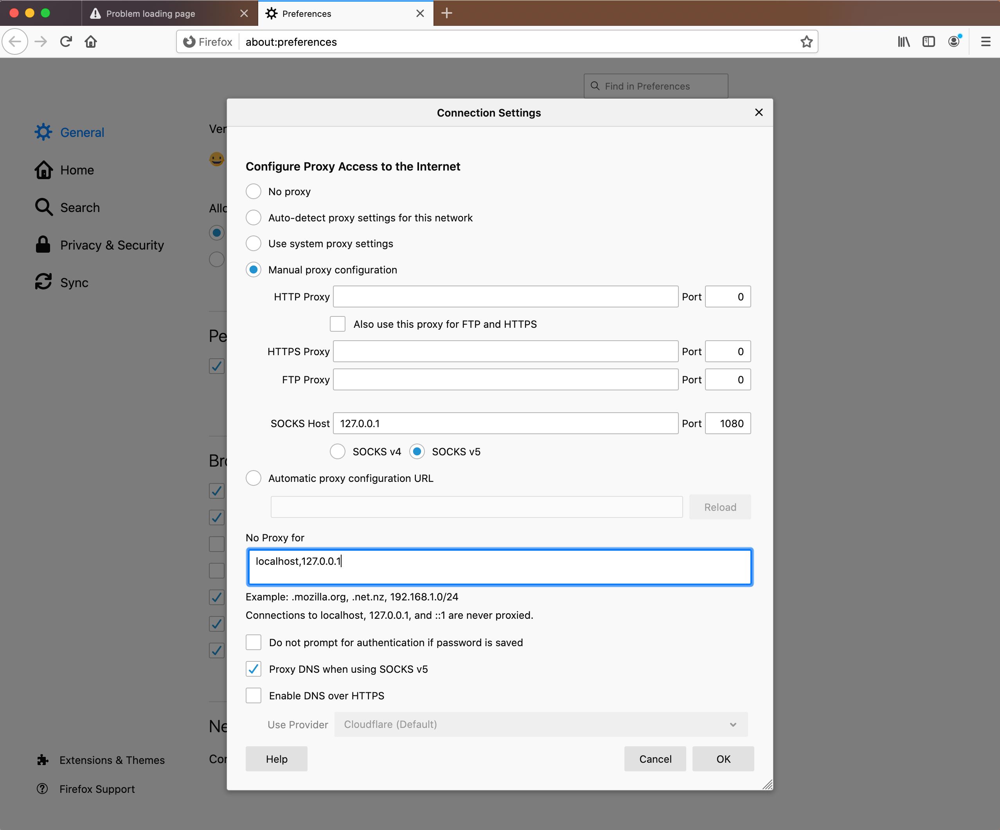
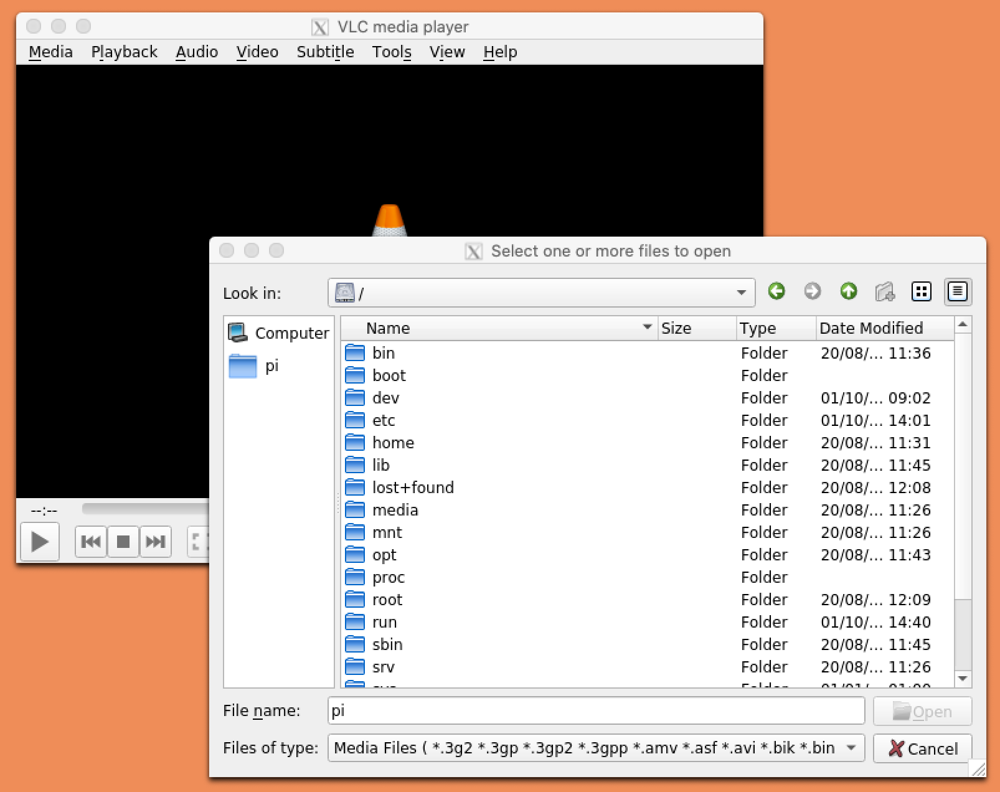
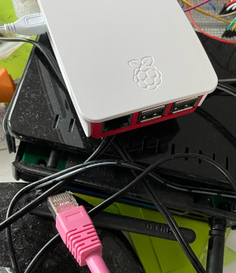

In this post I have gathered various tips and tricks that can make you a more productive SSH user.
Copying SSH keys to the server
A lot of beginners when faced with the problem of uploading their public keys to the server, follows a manual process. I will demonstrate this, by trying to upload my public key to a Raspberry PI manually:
mac$ ssh pi@raspberry_pi
pi@raspberry_pi's password:
pi$ mkdir .ssh
pi$ vi .ssh/authorized_keys
pi$ # Append contents of key_rsa.pub to authorized_keys
pi$ ^D # Ctrl-D to end our ssh sessionNow I can connect to Raspberry PI using my private key:
mac$ # Let's load the private key so that we can use it
mac$ ssh-add ~/.ssh/pi_rsa
mac$ ssh pi@raspberry_pi
pi$ # Yay!I was lucky - in my case everything worked, but often it doesn’t.
The main culprit is usually a wrong access permission set either on .ssh directory
or on authorized_keys file.
Here is how the right permissions should look like:
pi@raspberrypi:~ $ ls -la .ssh
total 12
drwx------ 2 pi pi 4096 Oct 1 10:09 .
drwxr-xr-x 17 pi pi 4096 Oct 1 10:09 ..
-rw------- 1 pi pi 574 Oct 1 10:09 authorized_keysPROs do not think about permissions, nor they manually edit authorized_keys file.
Instead they use ssh-copy-id util (a part of the official SSH distribution).
mac$ ssh pi@raspberry_pi 'rm -rf ~/.ssh' # Let's reset everything
mac$ ssh-copy-id -i ~/.ssh/pi_rsa pi@raspberry_pi
mac$ ssh-add ~/.ssh/pi_rsa # Do not forget to load the key
mac$ ssh pi@raspberry_pi
pi$ # Yay!One nice thing about ssh-copy-id is that it always uploads the public key,
even if you (like I in the above example) specify private key file on the command line.
Keys management
ssh-add is a nice utility that manages currently active (loaded) private keys.
Loaded keys can be automatically used for authentication.
To load a key type:
# ssh-add path-to-key-file
mac$ ssh-add ~/.ssh/pi_rsaOr just ssh-add to load id_rsa.
To list currently loaded keys:
$ ssh-add -lTo remove all keys:
$ ssh-add -DWhen you connect to a remote machine you have an option to pass your currently loaded keys along. This is called ssh agent forwarding and allows you to ssh into further machines using your private keys:

For example without key forwarding I cannot log from my Raspberry PI into my PC:
mac$ ssh pi@raspberry_pi
pi$ ssh mc@old-pc
Password:With key forwarding enabled (-A) I can:
mac$ ssh -A pi@raspberry_pi
pi$ ssh mc@old-pc
old-pc$ # yay!WARNING: You should only use forwarding when logging into servers that
you fully trust (see man ssh for details).
TIP: With the power of ssh-add there is no reason to have a key without password protection.
Remember to password protect all your keys. Always!
Using ~/.ssh/config
Sometimes your user name is too long or hard to remember or maybe the server name is
or maybe your server uses a non-standard SSH port. Any of these can make typing the right ssh command
in the terminal very hard. But there is a nice solution to this,
we just need to add an entry for our server to ~/.ssh/config file.
For example for my Raspberry PI computer I added the following entry:
# this is comment
Host pi
Hostname raspberry_pi
Port 22
User pi
IdentityFile ~/.ssh/pi_rsa
ForwardAgent yes
# or ForwardAgent noNow I can ssh into it by simply typing:
mac$ ssh pi
pi$ # yay!Copying files
scp command may be used to copy files, both from a server to the local machine:
# Assumes that we use pi alias
mac$ scp pi:./myfile.txt .
# Without pi alias
mac$ scp -P22 pi@raspberry_pi:./myfile.txt ./myfile.txtOr from the local machine to the server:
# Assumes that we use pi alias
mac$ scp map.txt pi:./map2.txt
# Without pi alias
mac$ scp -P22 map.txt pi@raspberry_pi:./
# You may skip -P parameter if server is using default (22) portTIP: If are going to transfer a big file remember to gzip it first.
For more complex scenarios we can use either sftp command:
mac$ sftp pi
Connected to pi.
sftp> ls # list files on the *server*
Bookshelf Desktop Documents Downloads Music Pictures Public
Templates Videos server_file.txt
sftp> get server_file.txt ./save_as_downloaded.txt
Fetching /home/pi/server_file.txt to ./save_as_downloaded.txt
sftp> put ./local_file.txt ./uploaded.txt
Uploading ./local_file.txt to /home/pi/./uploaded.txt
sftp> exitor use command line file manager like mc (Midnight Commander):
- Press
F9to select menu bar andRto expandRightmenu. - Select
SFTP link... - Enter the connection URL:

And then you may use standard mc commands to copy/move/modify files
on the server and the local machine.
To exit SFTP mode just enter .. in the top directory to which you sftped.
Port forwarding
Let’s say that there there is a service running on my Raspberry PI that is accessible only
via localhost. For example it can be a simple web server:
pi$ python3 -m http.server 7777 --bind 127.0.0.1 --directory .Because server is listening only on 127.0.0.1 instead of 0.0.0.0,
we cannot access it from outside of my Raspberry PI:
mac$ curl raspberry_pi:7777
curl: (7) Failed to connect to raspberry_pi port 7777: Connection refusedTo access the server we may e.g. forward connections to port 5432 on my laptop to port 7777 on pi (this is called tunneling or port forwarding). We can do this using SSH: 
mac$ ssh -L localhost:5432:localhost:7777 pi
# In another terminal
mac$ curl localhost:5432
<html>
<head></head>
<body>
Welcome on Raspberry PI!!!
</body>
</html>The general syntax is -L local-machine:local-port:remote-machine:remote-port.
Notice that for the remote-machine we have chosen localhost, but we could e.g.
chose other computer to which pi can connect.
local-machine part can be omitted (localhost is the default).
If you don’t need the SSH session only the tunnel, you can run ssh as a background task
(this will not be a shell background task, so it will not show up in bg command):
mac$ ssh -fN -L localhost:5432:localhost:7777 pi
mac$ ps | grep ssh
84851 ttys001 0:00.01 grep ssh
84290 ttys002 0:00.15 ssh piPort forwarding can also work in the opposite direction. We may make a service running on my laptop accessible on Raspberry PI:
mac$ python3 -m http.server 9999 --bind 127.0.0.1 --directory .
# On PI
pi$ $ curl localhost:5432
curl: (7) Failed to connect to localhost port 5432: Connection refused
# On Mac
mac$ ssh -R localhost:5432:localhost:9999 pi
pi$ curl localhost:5432
<html>
<head></head>
<body>
Hello from MacOS!!!
</body>
</html>Here syntax is -R remote-machine:remote-port:local-machine:local-port.
Connections to remote-machine:remote-port are forwarded to local-machine:local-port.
By default the open ports are available on localhost only (think security!).
If you want to accept connections from outside, you need to change
GatewayPorts settings of sshd daemon to yes on the server (the machine to which you connect to):
pi$ sudo vi /etc/ssh/sshd_config
# Set GatewayPorts yes
pi$ sudo service sshd restartNow we can make pi accept connection from the entire local network and
forward them to my laptop:
# Establish tunnel
mac$ ssh -R '*:5432:localhost:9999' pi
# From my PC
old-pc$ curl raspberry_pi:5432
<html>
<head></head>
<body>
Hello from MacOS!!!
</body>
</html>TIP: The single quotes are needed to prevent shell expansion of *.
Providing internet connection via SSH
Say on your local machine you cannot access e.g. facebook.com for some strange reason.
But you noticed that on a certain server there is no such restriction,
and you can e.g. use links to browse facebook.com:

Since FB does not looks good in links you really need a better solution…
Behold, SSH comes to the rescue. By using a dynamic port forwarding we may establish SOCKS tunnel to the server:
mac$ ssh -C -D 1080 pi -C is for compression, 1080 is the standard SOCKS port.
Now we need to configure a browser. Firefox is well known for excellent SOCKS support:

And voilà facebook.com is working again!
A trick like this was very popular when I was living in a dormitory. Our dorm internet connection was very slow, but as CS students we had SSH access to a few servers, some of them with very fast internet connections…
X Forwarding
Here I will explain how to do this on MacOS. First we need to install XQuartz, which is X11 port for MacOS:
mac$ brew install xquartzNext we need to start XQuartz.app (it will only show in the dock).
Now we must enable X11 forwarding support on Raspberry PI:
pi$ sudo vi /etc/ssh/sshd_config
# Set:
# X11Forwarding yes
# X11DisplayOffset 10
pi$ sudo service sshd restart
pi$ which xauth # Make sure xauth is installedAnd finally we can start our X session:
mac$ DISPLAY=:0 ssh -X pi
pi$ vlcNow when I typed vlc a VLC window popped up on my laptop.
The resolution isn’t great (it would look native if I used X11 port forwarding on Linux),
this is due to poor retina display support in XQuartz. But still it works:

Tmux session manager
Sometimes you want to leave some program running on the server even if you close
you SSH connection. Or maybe you are doing something important, e.g. devops stuff and
you want to make sure that the command you are executing will not be interrupted.
For cases like this (…and for hacker movie lovers) terminal multiplexers where invented.
The two most popular ones are screen and tmux.
Here I will shortly explain what tmux is.
Generally tmux deserves its own blog post,
fortunately for me this post is already written.
Here I will only show you one single use-case, just to give you the taste what tmux is all about.
Let’s connect to Raspberry PI and start vi inside tmux session:
pi$ tmux
pi [tmux]$ vi
# Some serious editingNext I will perform some manual intervention (the physical connection got busted):

My SSH session on my laptop hanged so I had to kill it with pkill ssh.
Now after I fixed the Ethernet connection and reconnected to pi
I can execute tmux ls and see my previous
session:
pi$ tmux ls
0: 1 windows (created Thu Oct 1 15:00:01 2020) [90x43]Let’s attach tmux to this session:
pi$ tmux attach -t 0
# Bang! my VI is back with all the unsaved textLooks like after attaching I could recover all my previous work!
WARNING: tmux session will not survive the server restart. Make sure that the server
will not be restarted while running important computations within tmux.
Congrats! Now you are SSH PRO!
References
- https://www.cyberciti.biz/faq/create-ssh-config-file-on-linux-unix/
- http://www.trembath.co.za/mctutorial.html
- https://phoenixnap.com/kb/ssh-port-forwarding
- https://help.ubuntu.com/community/SSH/OpenSSH/PortForwarding
- https://linuxize.com/post/how-to-setup-ssh-socks-tunnel-for-private-browsing/
- https://unix.stackexchange.com/a/46748